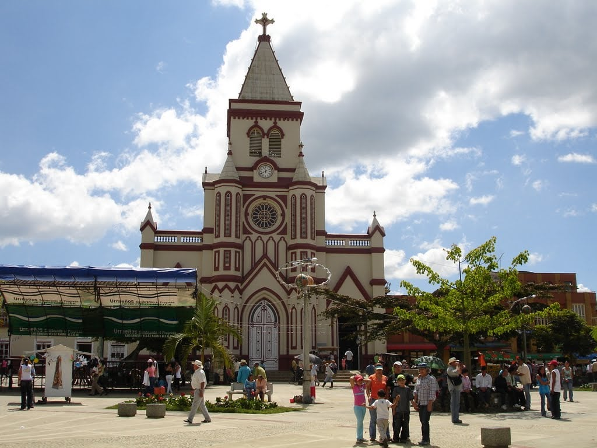
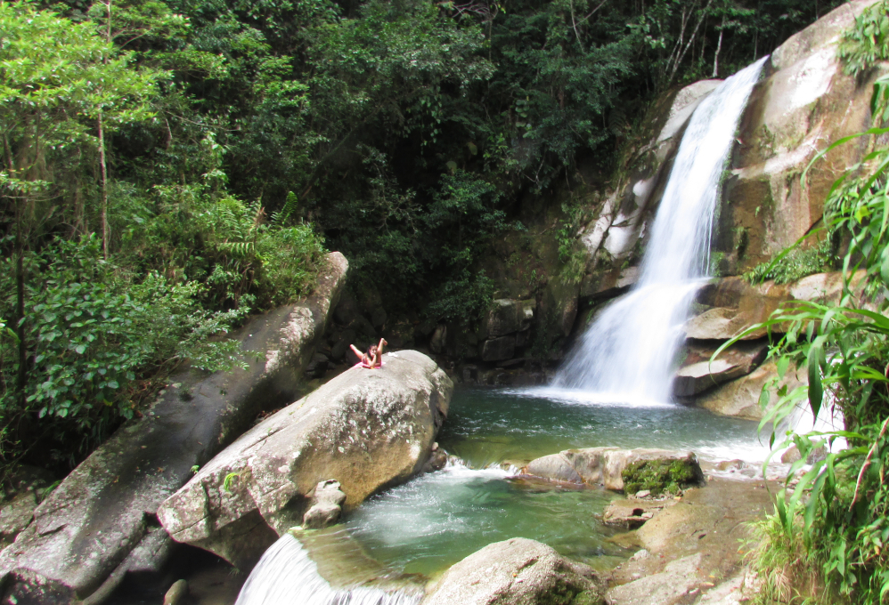
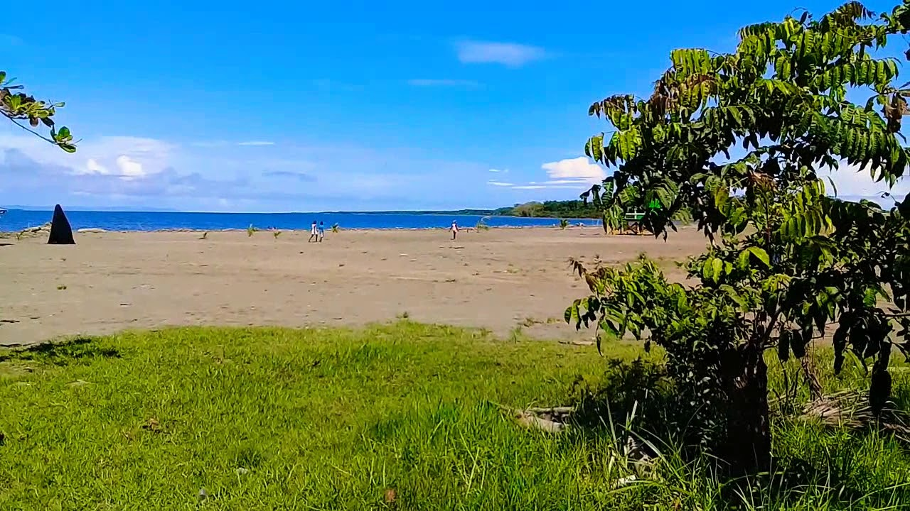
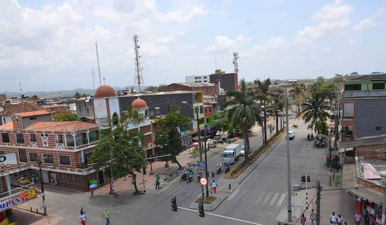
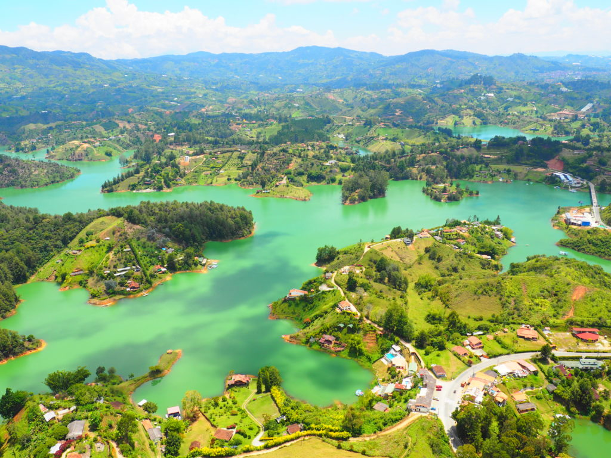
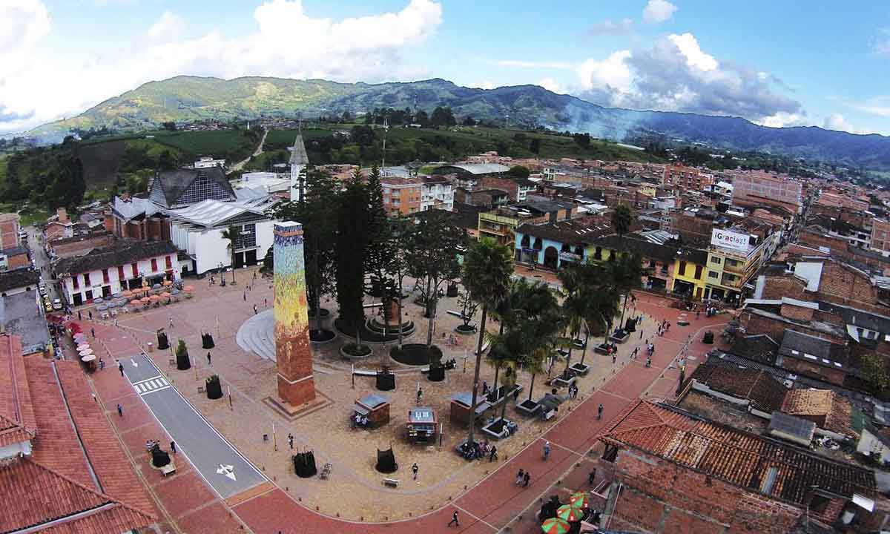

URRAO
Urrao es un municipio de Colombia, localizado en la subregión suroeste del departamento de Antioquia. Limita por el norte con los municipios de Frontino y Abriaquí, por el este con los municipios de Abriaquí, Caicedo, Anzá, Betulia y Salgar, y por el sur y el oeste con Vigía del Fuerte y el departamento del Chocó. Es el segundo municipio más grande del departamento.

SAN CARLOS
San Carlos es un municipio de Colombia, localizado en la subregión Oriente del departamento de Antioquia. Limita por el norte con los municipios de San Rafael, San Roque y Caracolí, por el este con el municipio de Puerto Nare, por el sur con los municipios de Puerto Nare y San Luis y por el oeste con los municipios de Granada y Guatapé.

TURBO
Turbo es un distrito de Colombia localizado en la subregión de Urabá en el departamento de Antioquia. SIendo el municipio más grande de este departamento con una extensión de 3055², muy por encima de Urrao, limita al norte con el Golfo de Urabá, Necoclí y Arboletes, al oriente con San Pedro de Urabá y Valencia (Córdoba), al suroriente con Apartadó, Carepa y Chigorodó, al sur con Mutatá y al occidente con Riosucio y Unguía (ambas en el Chocó).

APARTADO
Apartadó es un municipio de Colombia, ubicado en la subregión de Urabá en el departamento de Antioquia, siendo el municipio más poblado de dicha región. Limita por el norte el puerto y distrito de Turbo, además su cabecera municipal está a 310 kilómetros de la capital departamental, Medellín.

GUATAPE
Guatapé es un municipio de Colombia, localizado en la subregión Oriente del departamento de Antioquia. Limita por el norte con el municipio de Alejandría y Concepción, por el este con los municipios de San Rafael y San Carlos, por el sur con los municipios de Granada y El Peñol y por el Oeste con El Peñol. Su cabecera dista 79 kilómetros de la ciudad de Medellín, capital del departamento de Antioquia. El municipio posee una extensión de 76 kilómetros cuadrados.

EL CARMEN
Carmen de Viboral es un municipio de Colombia, localizado en la subregión Oriente del departamento de Antioquia. Carmen de Viboral es conocido como la Cuna de la cerámica artesanal, pues en el lugar hay varias fábricas productoras de cerámica, además de la buena reputación que estas tienen.
